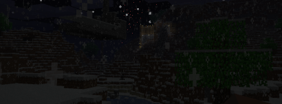

Here's how to make a list:
Example of an anomaly:
They are usually not minecraft-esque at all.
To submit a video, contact our worker
Hello Sun, I just got email from "aag_8a", and he told about dark-sun or something. Should we check it? Only one guy got it, I don't think it's major, if only he emailed it
-Trident